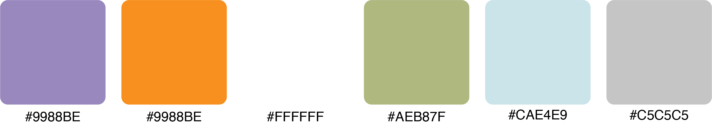

Web Design
Children Discovery Museum

Overview
Children's Discovery Museum is a nonprofit interactive museum with hands-on exhibits that inspire the creativity and curiosity of our youth. As a regular visitor of the museum during my childhood, I cherish many of the joyful memories I had playing in the museum. It motivated me to reimagine the website of the Children's Discovery Museum when I noticed that the current website had many design and technical issues. I approached designing to website to reflect my excitement to visit the museum when I was a child and the playful environment of the museum.
Objective: Create a playful reimagination of the Children's Discovery Museum website to attract more parents and children to the museum.
Toolkit: Figma
The target audiences are parents with young children, schools interested in going there for field trips, and young children.
Mood Board

Colors
Final Design